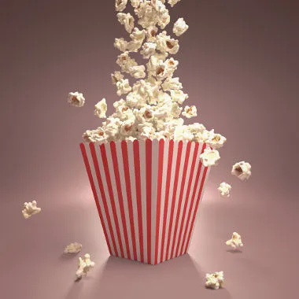
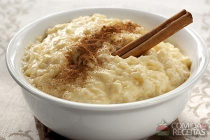

Comidas Salgadas
- Batata frita;
- Cachorro-quente;
- Empada;
- Feijão tropeiro;

Comidas Doce
- Pipoca; 
- Algodão-doce;
- Arroz-doce; 
- Pé de moça;
Embora a origem das festas juninas seja nas celebrações pagãs dos povos da Antiguidade,
que costumavam celebrar a chegada do verão (que no hemisfério norte acontece nessa época) e pedir fartura nas colheitas,
elas ganharam conotação religiosa pela Igreja Católica, que associou os festejos da época aos três santos
O começo da Festa Junina no Brasil remonta ao século XVI. As Festas Juninas eram tradições
bastante populares na Península Ibérica (Portugal e Espanha) e, por isso, foram trazidas para cá pelos portugueses durante a
colonização, assim como muitas outras tradições.
.jpg)

.jpg)
As comemorações de junho no Norte possuem um elemento a mais nas festividades, pois elas se entrelaçam com a festa do
Boi-Bumbá. A maior manifestação artística e popular da região é o Festival Folclórico de Parintins, que acontece na última semana de junho.
Muito tradicionais e populares, as festas juninas no Nordeste fazem muito sucesso em todo o mundo.
Não somente pelo quentão, pipoca, pamonha e pé de moleque, mas também pela sua atmosfera alegre e vibrante que conquista
até aqueles que nem são muito chegados ao estilo caipira.
No Centro-Oeste, o sertanejo também é tradicional, sendo o ritmo que embala muitas Festas Juninas. Alimentos à base de milho
também são comuns, e a decoração típica é reproduzida nas celebrações nessa região.
Essas festas são comemoradas com a dança da quadrilha, e com comidas e bebidas tradicionais da época
(como, por exemplo, canjica, pipoca, bolo de fubá, arroz doce e quentão).

As festas são embaladas por músicas como o vaneirão, o chamamé e o xote gaúcho. Ainda nas danças típicas está a dança
das fitas, trazida pelos europeus como costume e muito dançada té hoje por toda a região.